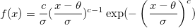
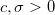

ワイブルフィット
ワイブルフィット
概要
ワイブルフィットは、生存関数と故障時間の間の関係を分析するパラメータ法の1つです。解析によって、ワイブル分布のハザード関数と生存関数を決めるパラメータの推定値を得ることができます。
ワイブル分布：
 ここで  のとき、
生存関数：
=\exp(-\left({\frac{x-\theta }{\sigma }}\right)^{c})")
ハザード関数：
ここで、cは形状パラメータ、 はスケールパラメータ、 は位置パラメータです。Originでは、OriginではWeibull fitはcと についてのみ議論し、 = 0と仮定します。
は位置パラメータです。Originでは、OriginではWeibull fitはcと についてのみ議論し、 = 0と仮定します。
もしc>1ならハザードは増加し、c=1の場合にはハザードは一定（exponentioal model)になり、c<1なら減少します。
必要なOriginのバージョン: OriginPro 9.1 SR0以降
学習する項目
このチュートリアルでは、以下の項目について解説します。
ワイブルフィットを実行
- 新しいワークブックを用意します。ヘルプ: フォルダを開く: サンプルフォルダを選択して、サンプルフォルダを開きます。このフォルダ内のStatisticsサブフォルダにあるweibull fit.dat ファイルを探します。空のワークシートにファイルをドラッグアンドドロップしてインポートします。
- 統計：生存分析：ワイブルフィット選択してダイアログを開きます。
- 時間範囲にA(X)列を入力します。同様に、打切り範囲にB(Y）列を入力します。
- 打切り値のドロップダウンリストから打切り値として0を選択します。
- プロットの項目で、生存プロットとハザードプロットにチェックを付けます。
- OK ボタンをクリックして、ワイブルフィットを実行します。
結果の解釈
分析レポートのワークシートWeibullFit1を開きます。
- 「イベントと打ち切り変数のサマリー」表から、打切りは19で打切りパーセントは0.2111である事がわかります。
- 「パラメータ推定の解析」の表では、Weibull 分布の全てのパラメータの推定値を入手できます。
切片==4.1959( は小さな極値分布の切片、 = ln(Weibull Scale))
Weibullスケール= =66.4153, Weibull 形状=c=2.0204
スケール=0.495 (scale=1 / c)
- c>1なので、時間とともにハザードが増加すると結論付けられます。
- さらに、生存関数とハザード関数を得ることができます。
-